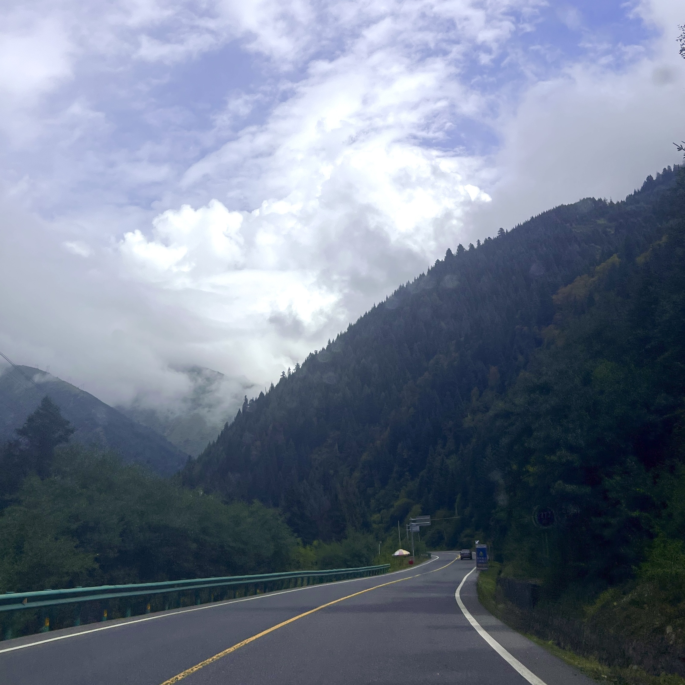

An independent guide for curious visitors
Chengdu,
after the postcard.
A city with four distinct moods: eat with abandon, stay up late, go outward, and keep heading west.
boldly.pepper · broth · smoke↘ 02Move
slowly.tea · neon · late nights↘ 03Go
farther.rivers · paths · steam↘ 04Look
west.roads · altitude · silence↘
01 / FOOD
Eat with your
whole day.
Chengdu food is not a checkbox. Start with a bubbling pot, chase it with noodles, and let the table decide what comes next.

Hot. Bright. Shared.
Never rushed.
leave room for surprise.


FAVORITES
No itinerary should be so precise that it cannot make room for a second bowl.


02 / CHENGDU LOCAL
One city,
two tempos.
Morning tea under plane trees. A skyline on the move. Then music, massage, and nowhere particular to be.

DARK
When the streets turn from soft to electric, stay out just long enough to see Chengdu change its voice.

THE SLOW SHIFT
Tea at noon.
Everything else later.
Renmin Park is a reminder that unstructured time is a local institution.


03 / BEYOND THE CITY
The city is only
the beginning.
Within a few good hours: red cliffs, temple trails, old towns, misty pools, and a reason to keep the return date loose.

Carved into a cliff. Kept by the river.


THE
LONG
WAY.
It is fine to plan an escape around a trail, a warm pool, or a single improbable view.


04 / TIBETAN PLATEAU
West gets
very wide.
The road beyond Chengdu leads into the Tibetan cultural landscapes of western Sichuan. Travel with time, humility, and a plan that can change with the weather.


AS A
GUEST.
These are living communities, not a backdrop. Ask before photographing people or religious spaces; follow local guidance and keep your pace respectful.


ROAD
IS THE
REASON.



COME AS A FRIEND
Want a real
Chengdu day?
Tell me what kind of traveler you are. I will share the places, meals, and routes that make the most sense for you.
bayueban0809@gmail.com